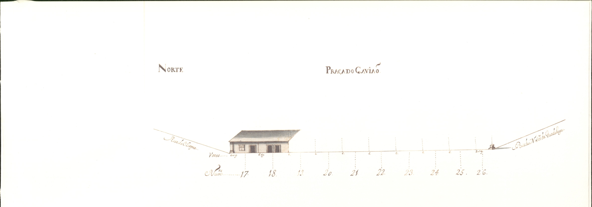
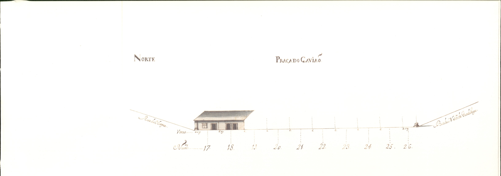

48 Praça do Gavião
Centro nevrálgico de todo o bairro da Gavieira, a praça do Gavião , de cujos vértices partiam 4 ruas, teve o seu início em «Abril de 1725... [data em que] se começou a quebrar pedra e a fazer casas no bairro da Gavieira, chamado o Quinteiro ou Reduto que é prazo do Cabido de que é enfiteuta António Barreto Gavião ».
Caso ímpar na cidade de Braga e, do ponto de vista histórico, talvez o primeiro loteamento do país, ainda não foi, infelizmente, estudado: não sabemos as razões que levaram à sua criação (aumento de população?), nem o nome do seu urbanista ou do arquitecto, nem quem veio morar para aqui, etc.
Sabemos apenas o que os desenhos que o Mappa nos mostra dizem: há uma nova forma de pensar as fachadas (grandes aberturas nas portas e janelas), há uma intervenção, talvez de arquitecto — por oposição a formas tradicionais —nesse projecto, e há indícios de, pelo menos, ter existido alguma contingentação no desenho das fachadas das casas: poderiam ir além de seis varas de largura previstas para cada lote, mas as linhas das empenas e de separação de dois pisos tinha que ser contínua, apesar do desnível do terreno onde estão implantadas; as portas e janelas tinham sempre «molduras» em pedra.
Com 9 casas construídas em 1725 e 27 para construir, não sabemos quanto tempo levou a preencher todos os lotes.
Cerca de 1775 , foi aqui colocada uma fonte, de desenho «rocaille».
Com uma unidade arquitectónica ainda hoje notável tem apenas a destoar as duas casas, construídas em 1871 e 1872 , que ocupam os espaços correspondentes aos prazos n.º 17, 18 e 19.
A praça do Gavião , que no século XVIII também foi conhecida por, Quinteiro, Reduto ou campo Novo do Reduto, tem actualmente a designação oficial de praça Mouzinho de Albuquerque , que lhe foi dada pela Câmara Municipal em 4 de Janeiro de 1898. É mais conhecida, porém, por Campo Novo.
Visão original
.jpg) 
.jpg)
.jpg)
Visão atual


Casas
1 Pertence ao n.° 11 da Rua de S. Gonçalo , para onde tem frontaria e serventia principais.
2 D. Agostinha Maria de Barros Gavião, enfiteuta principal do prazo do casal dos Chãos ou Quinteiro. Paga foro ao enfiteuta do prazo do casal dos Chãos ou Quinteiro.
3 D. Agostinha Maria de Barros Gavião, enfiteuta principal do prazo do casal dos Chãos ou Quinteiro. Francisco do Vale , da freguesia de S. Paio de Pousada , paga 2000 reis ao enfiteuta do prazo do casal dos Chãos ou Quinteiro. Foi construída antes de 1740 .
4 D. Agostinha Maria de Barros Gavião, enfiteuta principal do prazo do casal dos Chãos ou Quinteiro. Paga foro ao enfiteuta do prazo do casal dos Chãos ou Quinteiro.
5 D. Agostinha Maria de Barros Gavião, enfiteuta principal do prazo do casal dos Chãos ou Quinteiro. Paga foro ao enfiteuta do prazo do casal dos Chãos ou Quinteiro.
6,7 e 8 D. Agostinha Maria de Barros Gavião, enfiteuta principal do prazo do casal dos Chãos ou Quinteiro. «Chãos de casa» do prazo do casal dos Chãos ou Quinteiro. O chão n.° 8 confronta, do poente, com o chão n.° 26 da Rua Sto. André .
9 D. Agostinha Maria de Barros Gavião, enfiteuta principal do prazo do casal dos Chãos ou Quinteiro. Paga foro ao enfiteuta do prazo do casal dos Chãos ou Quinteiro. Confronta, do sul, com a casa n.° 25 da Rua de Sto. André .
10 a 16 D. Agostinha Maria de Barros Gavião, enfiteuta principal do prazo do casal dos Chãos ou Quinteiro. «Chãos de casa» do prazo do casal dos Chãos ou Quinteiro. O chão n.° 16 confronta, do norte, com a casa n.° 1 da Rua das Oliveiras .
17 e 18 D. Agostinha Maria de Barros Gavião, enfiteuta principal do prazo do casal dos Chãos ou Quinteiro. Martinho de Araújo , pedreiro, paga 2000 reis ao enfiteuta do prazo do casal dos Chãos ou Quinteiro. As casas foram construídas depois de 1725 . O n.° 17. confronta, do poente, com a casa n.° 36 da Rua das Oliveiras .
19 a 26 D. Agostinha Maria de Barros Gavião, enfiteuta principal do prazo do casal dos Chãos ou Quinteiro. «Chãos de casa» do prazo do casal dos Chãos ou Quinteiro. O chão n.° 26 confronta, do poente, com o chão n.° 1 da Rua de N. Sra. de Guadalupe .
27 a 32 D. Agostinha Maria de Barros Gavião, enfiteuta principal do prazo do casal dos Chãos ou Quinteiro. «Chãos de casa» do prazo do casal dos Chãos ou Quinteiro. O chão n.° 27 confronta, do norte, con o chão n.° 35 da Rua de N. Sra. de Guadalupe .
33 D. Agostinha Maria de Barros Gavião, enfiteuta principal do prazo do casal dos Chãos ou Quinteiro. Mariana Cardoso , da freguesia de Nogueira , paga 2000 reis ao enfiteuta do prazo do casal dos Chãos ou Quinteiro. Esta casa foi construída antes do ano de 1735 .
34 a 36 D. Agostinha Maria de Barros Gavião, enfiteuta principal do prazo do casal dos Chãos ou Quinteiro. «Chãos de casa» do prazo do casal dos Chãos ou Quinteiro. O chão n.° 36 confronta, do sul, com o chão n.° 12 da Rua de S. Gonçalo .